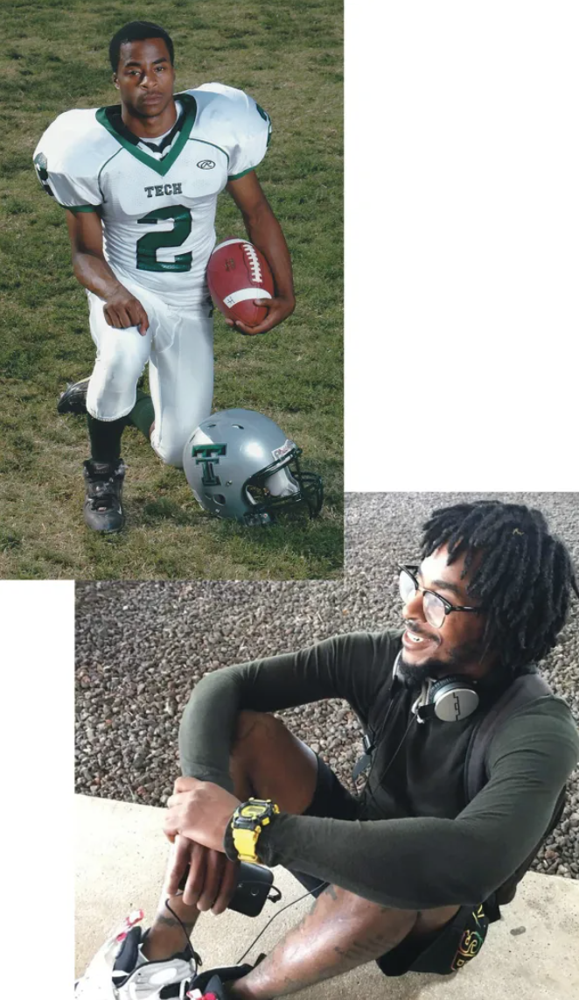
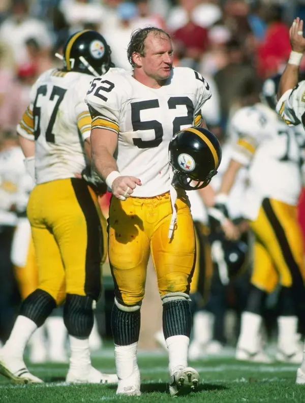

Since DuQuan Myers died six years ago, he’s come back in ways that are mysterious and magical and hard to explain. It started the day of his funeral, when the doves that were released over his coffin refused to fly home, perching instead in the oak tree just above his grave as if witnessing a visitation. Then there was that drive to El Paso, Texas, when — not once but twice — the windshield wipers started swiping just as the satellite radio cut out midsong, switching to the tune Myers’ sister Natasha had been listening to at the exact moment when her mom called with the news that her brother was gone. There was the way Myers’ nephew — the one who was just a baby when Myers died — would sometimes point into an empty corner of a room and say “uncle.” There were the Pokémon cards that Myers had loved as a child but hadn’t played with in years turning up one by one in unexpected and impossible places, like the middle of a clean kitchen floor. There were the nights when Myers’ mother, Letitia Wilbourn, would feel him, actually feel him, resting his head upon her shoulder, even though no one was there. But, of course, that’s not right. There was someone there. He was there. She knew it. Such is the logic of grief.
Tragedy rips the grieving out of the storyline of their own life, denies them any sense of what the past meant or the future will hold. Wilbourn remembers few details from her son’s funeral, but she does remember the doves. “That lady said, ‘These birds have never done this. Never,’” she tells me, sitting on a small sofa in the darkened living room of her modest house in the suburbs of Fort Worth, surrounded by pictures and mementos from her son’s short life: an infant footprint from the hospital where he was born, a class project he wrote about wanting to own a whale, a photo of him posing in his Little League uniform with a shy smile. “The lady was like, ‘Was he a very gentle spirit?’”
DuQuan Myers was a gentle spirit. His family called him the “animal whisperer,” the kid who loved to roam the farmland that still abutted their Echo Heights neighborhood and who would bring home all kinds of creatures he’d “rescued” — dogs, cats, turtles, frogs, lizards, toads, even once a snake that Wilbourn found, to her horror, in a candy jar. When his three older sisters squabbled, Myers was the one who always could diffuse the situation, the baby brother whose humor and charisma and cheerfulness were impossible to resist. It fit no known narrative that Myers would hurt any living thing, himself included. And yet on the evening of Feb. 17, 2017, Wilbourn had been driving home from her job as a cop for the Tarrant County Sheriff’s Office when she received a phone call. On the other end, she could hear the keening sobs of the young woman Myers had dated off and on for years. “She said, ‘Quan’s dead,’” Wilbourn explains. “I was like, ‘What?’ She said, ‘DuQuan’s dead.’” Home alone in his apartment near Texas State, 26 years old and only months away from getting a degree in criminal justice, Myers had shot himself in the head.
DuQuan Myers hadn't shown many symptoms — but was diagnosed with stage 1 CTE.
Without thinking, wild with grief, Wilbourn turned her car toward San Marcos and drove 77 miles in 30 blind minutes before a friend called and persuaded her to pull over and turn around. Myers was gone. There was nothing to be done that night, which Wilbourn spent at home, alone, her phone switched off so nothing could puncture the cocoon of mourning and confusion. She’d spoken to Myers earlier that day, just before he’d begun his shift at FedEx. He’d seemed fine, his normal self. But had she missed something? She knew he had a gun, but he lived in Texas; everyone has one. She’d only discussed suicide with him once before, back when Chris Benoit, a wrestler Myers admired, hanged himself. Myers had said, “Oh, I’d never commit suicide. I love me way too much for that.” Then he’d grinned at her with that way he had. “Look at how pretty I am.” Now, her beautiful boy was gone.
In the car the next day, on the way to San Marcos to begin the procedural processes of death — closing up Myers’ apartment, identifying his body, speaking to investigators who had no doubt that the gunshot wound was self-inflicted — Wilbourn was on a call with the medical examiner when, out of nowhere, she heard herself asking if they could save Myers’ brain, if they could have it studied. “I just knew that the suicide didn’t make sense, because he wasn’t suicidal,” she says, her voice measured, her Texas accent melodic. “I was just praying for answers, and when the phone rang, that’s what came out. I wasn’t thinking that anything was wrong with his brain or anything like that, I just knew something wasn’t right. It’s just the mother’s instinct.”
There was also, perhaps, a subconscious concern. Myers had played football for seven years, from sixth grade through his senior year of high school. In the time since he’d stopped playing, Wilbourn had learned about chronic traumatic encephalopathy — the degenerative brain disease that had plagued NFL greats like Mike Webster, Andre Waters, and Dave Duerson (who shot himself in the heart specifically so that his brain would be intact when studied). Like many people, she’d been alarmed by the reports of these famously tough athletes whose very toughness had been their undoing. Then again, she didn’t actually think Myers fit the CTE profile: He had not played football past high school; he’d never had a concussion that she knew of; he was nothing like Aaron Hernandez or Junior Seau, men who’d grown angry and addled and violent before dying angry and addled and violent deaths. So it was a surprise, she says, when “the first thing out of my mouth was ‘Can we donate his brain to Boston University?’” She looks down at the photos surrounding her. “I think that was just a God thing.”
IT HAS BEEN ALMOST two decades since Pittsburgh Steelers Hall of Famer Mike Webster become the first NFL player to be diagnosed with CTE, after a heart attack at age 50 put an end to misery so intense that Webster — by then sleeping in his car because he couldn’t remember where he lived — would shoot himself with a taser gun until he mercifully blacked out. Even then, CTE wasn’t exactly a new discovery: A medical report from 1928 described boxers with “punch-drunk syndrome,” later classified as dementia pugilistica. The first known use of the term “chronic traumatic encephalopathy” occurred in a neurology paper written in 1949. But Webster’s 2005 diagnosis was a watershed moment, implicating the most popular sport in America, one grafted into the guts and glory of the American psyche — and one that millions of American kids were suiting up to play every season. So documentaries were made. Brain banks were established. Funding flowed. And as more and more brains of dead athletes were submitted for study, it became clear that, while CTE was a progressive disease, it was not the sole province of aging NFL players. It could show up in the brains of people in their teens and twenties, people who’d never played past the age of 18.
Mike Webster of the Pittsburgh Steelers, known as Iron Mike, during a 1984 game against the 49ers. He played 17 years in the NFL, 15 of them with the Steelers
Even in CTE’s earliest stages — and for reasons scientists are still exploring — its effects could be grave. “We’re north of 1,300 brains, and while the overwhelming majority are from people who are older, we certainly have hundreds of brains of people in that younger age group,” says Dr. Robert Cantu, co-director of the Center for the Study of Traumatic Encephalopathy, chair of neurosurgery at Emerson Hospital, and the nation’s leading authority on concussions.
“CTE hasn’t directly killed anybody in their teens, twenties, thirties, forties, but we have a lot of people with CTE that have died at those ages. Almost all of them have died by suicide.”